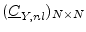
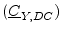
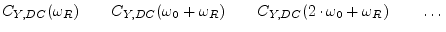
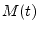
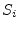
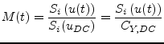
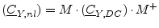

The noise in the non-linear part of the circuit is calculated by using the quasi-static approach, i.e. for every moment in time the voltages and currents are regarded as a time-dependend bias point. The noise properties of these bias points are used for the noise calculation.
Remark: It is not clear whether this approach creates a valid result for noise with long-time correlation (e.g. 1/f noise), too. But up to now, no other methods were proposed and some publications reported to have achieved reasonable results with this approach and 1/f noise.
Calculating the noise-current correlation matrix

needs several steps. The DC bias point taken from the result of the
HB simulation is the beginning. Its values are the bias used to build
the correlation matrix
. Each part is a  diagonal submatrix. The values are the power-spectral densities (PSD)
for each harmonic frequency:
diagonal submatrix. The values are the power-spectral densities (PSD)
for each harmonic frequency:
|  | (8.2) |
The second step creates the cyclostationary modulation that is applied to the DC correlation matrix. The modulation factor  originates from the current power spectral density  of each time step normalized to its DC bias value:
|  | (8.3) |
The third step transforms into frequency domain. This is done
by the procedure described in equation 7.13, resulting
in a Toeplitz matrix.
The fourth and final step calculates the desired correlation matrix:
|  | (8.4) |